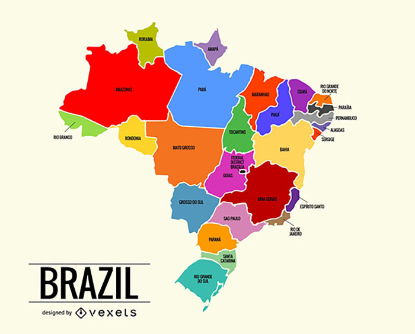

- Acre; população: 830.026 pessoas[2022]
- Alagoas; população: 3.127.511 pessoas[2022]
- Amapá; população: 733.508 pessoas[2022]
- Amazonas; população: 3.941.175 pessoas[2022]
- Bahia; população: 14.136.417 pessoas[2022]
- Ceará; população: 8.791.688 pessoas[2022]
- Distrito Federal; população: 2.817.068 pessoas[2022]
- Espírito Santo; população: 3.833.486 pessoas[2022]
- Goiás; população: 7.055.228 pessoas[2022]
- Maranhão; população: 6.775.152 pessoas[2022]
- Mato Grosso; população: 3.658.813 pessoas[2022]
- Mato Grosso do Sul; população: 2.756.700 pessoas[2022]
- Minas Gerais; população: 20.538.718 pessoas[2022]
- Pará; população: 8.116.132 pessoas[2022]
- Paraíba; população: 3.974.495 pessoas[2022]
- Paraná; população: 11.443.208 pessoas[2022]
- Pernambuco; população: 9.058.155 pessoas[2022]
- Piauí; população: 3.269.200 pessoas[2022]
- Rio de Janeiro; população: 16.054.524 pessoas[2022]
- Rio Grande do Norte; população: 3.302.406 pessoas[2022]
- Rio Grande do Sul; população: 10.880.506 pessoas[2022]
- Rondônia; população: 1.581.016 pessoas[2022]
- Roraima; população: 636.303 pessoas[2022]
- Santa Catarina; população: 7.609.601 pessoas[2022]
- São Paulo; população: 44.420.459 pessoas[2022]
- Sergipe; população: 2.209.558 pessoas[2022]
- Tocantins; população: 1.511.459 pessoas[2022]
5 Estados mais populosos do Brasil
| Estado |
Região |
População Residente |
| São Paulo |
Sudeste |
44.420.459 |
| Minas Gerais |
Sudeste |
20.538.718 |
| Rio de Janeiro |
Sudeste |
16.054.524 |
| Bahia |
Nordeste |
14.136.417 |
| Paraná |
Sul |
11.443.208 |
10 principais empresas para se trabalhar no Brasil
- Itaú Unibanco
- Banco Bradesco
- Mercedes-Benz
- SAP
- Banco Santander
- Banco do Brasil
- JP Morgan Chase & Co.
- Sanofi
- Unimed
- Procter & Gamble
Estados do Brasil
Dados IBGE